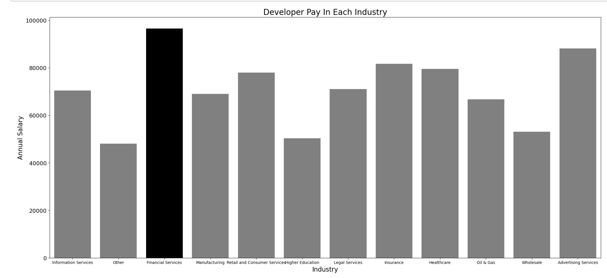
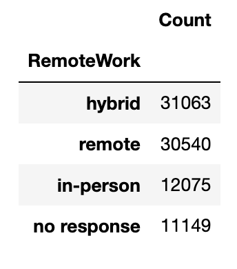
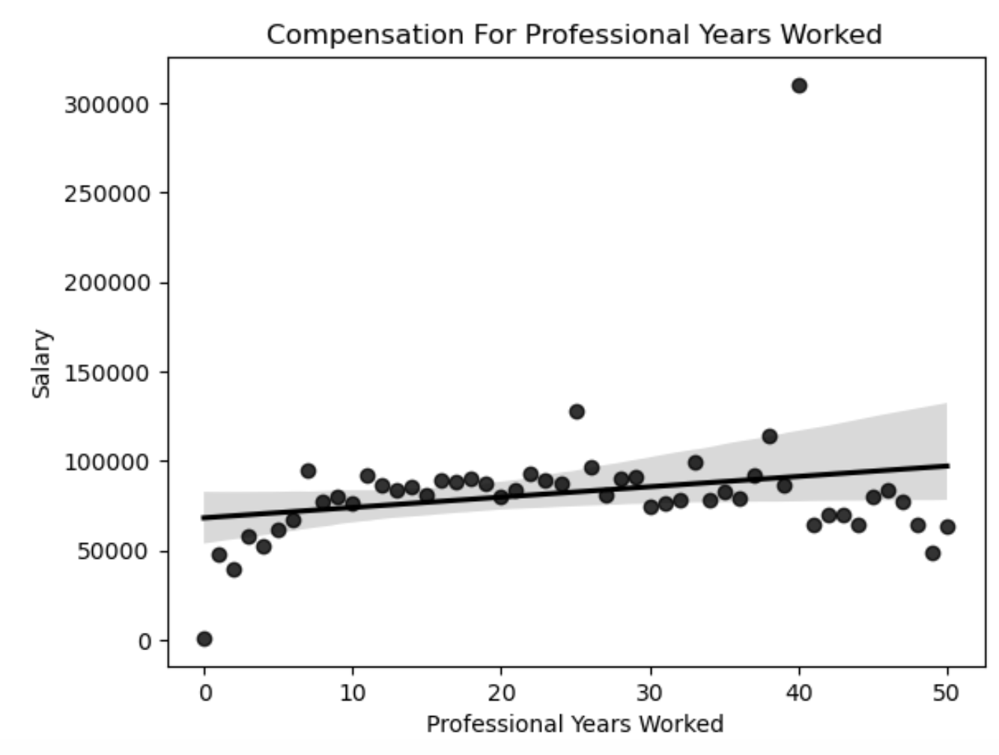
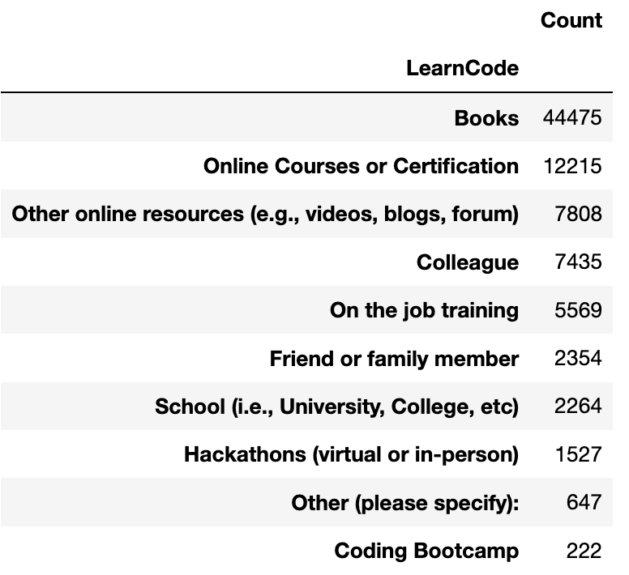
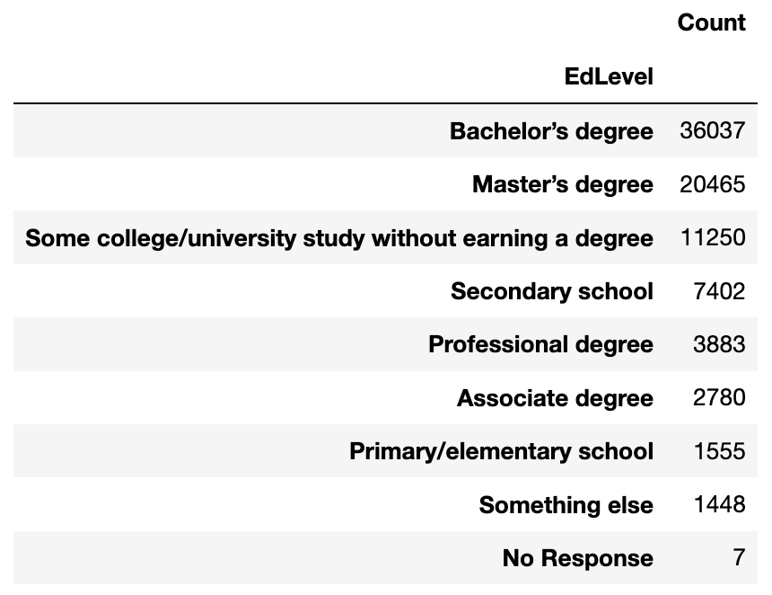

←
StackOverFlow Developer Survey Analysis
Presented by: Bladimir Nunez
Last Updated: March 26th, 2024
Project Overview
In this project I analyze data from a stack overflow survey that was
conducted in May of 2023 from May 8th - May 19th to find out
information on software developers such as salary, how they like to
learn how to code and favorite technolgies used. Questions I will be
answering in this analysis are:
- In what Industries do developers get paid the most?
- How much does remote working matter to employees?
- How does coding experience affect the level of pay?
- What is the most popular method of learning to code?
-
Are you more likely to get a developer role with a masters degree?
Visit GitHub Code!
Data Analysis (Data Visualization)
1. In what Industries do developers get paid the most?

2. How much does remote working matter to employees?

3. How does coding experience affect the level of pay?

4. What is the most popular method of learning to code?

5. Are you more likely to get a developer role with a masters
degree?

Insights
-
Developers get paid the most in the financial industry with an
average salary of $95,000
-
31000 people work in hybrid setting and 30000 people are fully
remote. Only 12,000 people are fully in person. this shows that
developers prefer working remote or having a hybrid schedule.
-
There is a positive correlation with with compensation as you have
more work experience and the highest paid developer in this dataset
was at $300,000 with 40 years of experience.
-
The most popular method of learning how to code is through books.
44,000 people agreed with this method.
-
Most developers in our survey had bachelors degrees then masters.
From analysis you do not need a masters to get a developer role.
Technologies Used
Python
Pandas: Data Manipulation
Seaborn: Data Visualization
Data Cleaning/Preprocessing
- Dropped Uneeded Columns
- Remove Duplicates
-
Handled missing values: Replace nulls with 0 in number columns
-
Cleaned out columns by removing uneeded information for cleaner
analysis